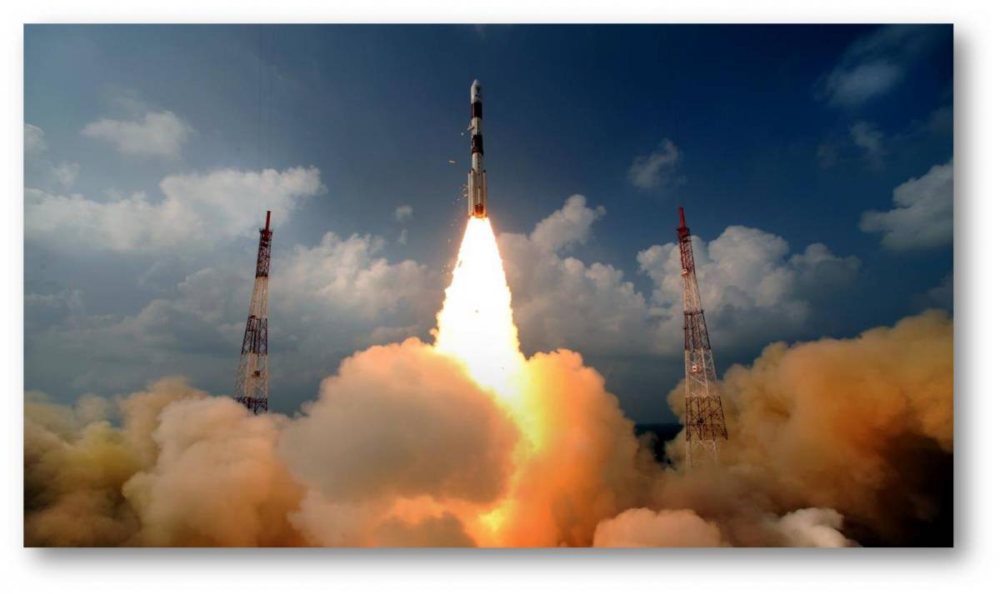
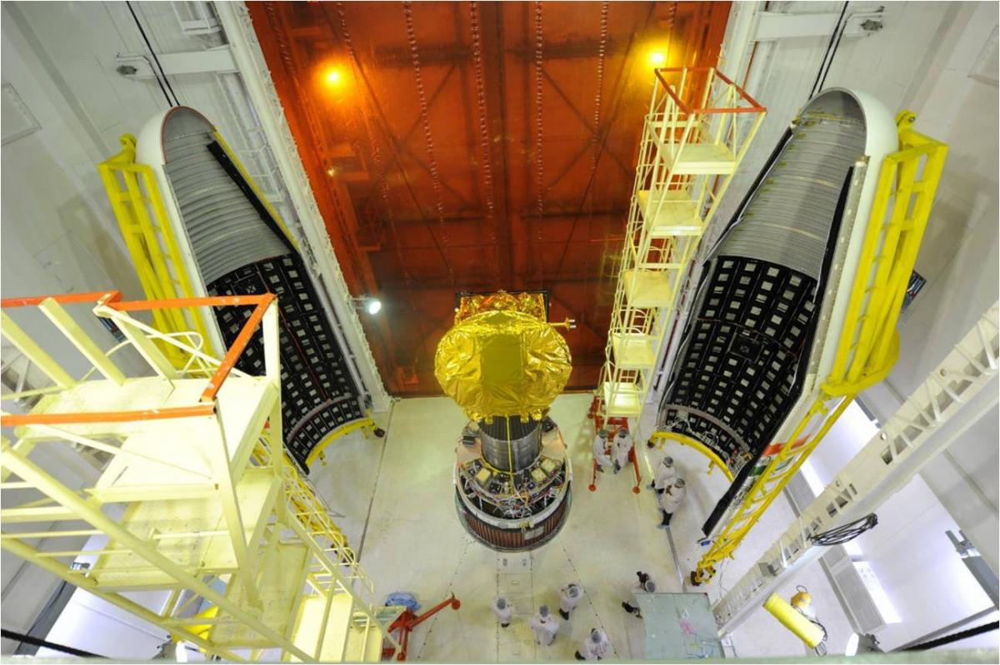
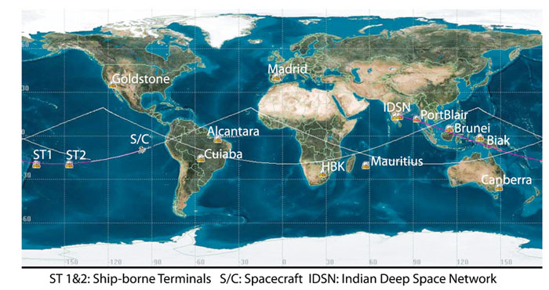
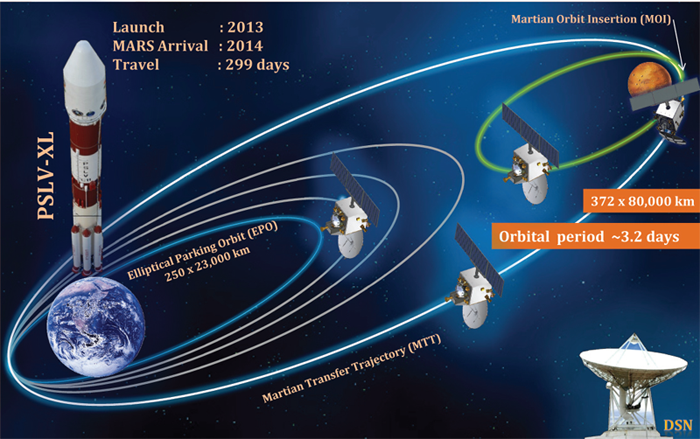

Marking India's first venture into the interplanetary space, MOM will explore and observe Mars surface features, morphology, mineralogy and the Martian atmosphere. Further, a specific search for methane in the Martian atmosphere will provide information about the possibility or the past existence of life on the planet.
Once India decided to go to Mars, ISRO had no time to lose as the nearest launch window was only a few months away and it could not afford to lose the chance, given the next launch would present itself after over 780 days, in 2016. Thus, mission planning, manufacturing the spacecraft and the launch vehicle and readying the support systems took place swiftly.

MOM was launched aboard PSLV C-25, which was an XL variant of the PSLV, one of world's most reliable launch vehicles. The XL variant was earlier used to launch Chandrayaan (2008), GSAT-12 (2011) and RISAT-1 (2012).

Based on the I-1-K satellite bus of ISRO that has proved its reliability over the years in Chandrayaan-1 and the IRS and INSAT series of satellites, the MOM spacecraft carries 850 kg of fuel and 5 science payloads.

The Orbiter is being tracked by the Indian Deep Space Network (IDSN), located outside Bangalore. IDSN's 32 m and 18 m diameter antennas are being complemented by NASA - JPL's Deep Space Network.

The Mars Mission was envisaged as a rendezvous problem, wherein the Mars orbiter is manoeuvred into a departure hyperbolic trajectory, escapes the SOI of Earth and thereafter enters the SOI of Mars.